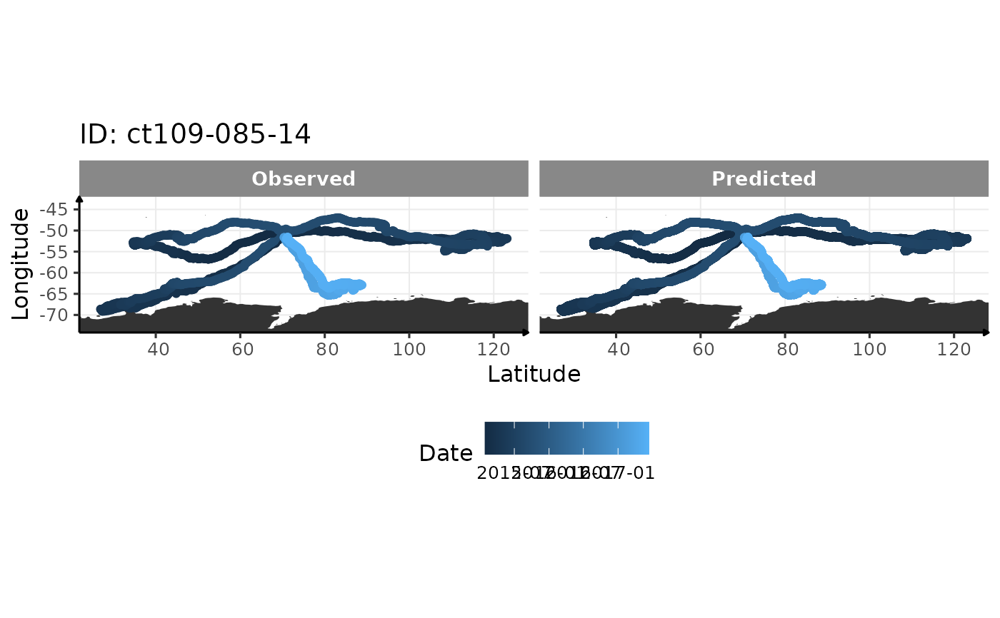

Treat location data with a continuous-time state-space model
Source:R/location_treatment.R
location_treatment.RdUsing fit_ssm function from aniMotum package, this function "clean" the
location data to be used for further analysis at the dive scale.
Usage
location_treatment(
data,
model = "crw",
time.step = 1,
vmax = 3,
with_plot = FALSE,
export = NULL
)Arguments
- data
Dataset of observation, usually the file \*Argos.csv or \*Location.csv files
- model
Choose to fit either a simple random walk (
"rw") or correlated random walk ("crw") as a continuous-time process model- time.step
options: 1) the regular time interval, in hours, to predict to; 2) a vector of prediction times, possibly not regular, must be specified as a data.frame with id and POSIXt dates; 3) NA - turns off prediction and locations are only estimated at observation times.
- vmax
The max travel rate (m/s) passed to sda to identify outlier locations
- with_plot
A diagnostic plot
- export
To export the new generated dataset
Examples
# load library
library(aniMotum)
library(data.table)
# run this function on sese dataset included in aniMotum package
output <- location_treatment(copy(sese), with_plot = TRUE)
#>
#>
#>
#>
